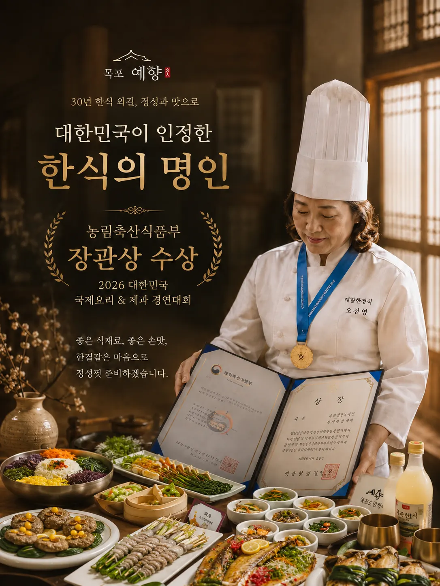

남도음식명가
12년 연속 선정
전라남도가 지정한 남도음식명가로, 목포문화관광에도 소개된 식당입니다.
ABOUT YEHYANG
평화광장에서 만나는 남도의 음식 이야기.
OUR STORY
남도의 맛과 멋, 목포의 바다를 한 상에 담습니다. 예향한정식은 목포 평화광장에 자리한 한정식 식당으로, 보리굴비 정식과 제철 활어회, 낙지탕탕이·연포탕 같은 목포의 향토 음식이 이곳의 상차림을 이룹니다.
풍부한 찬을 채운 정갈한 상차림에 ‘집밥의 정성’과 ‘전통 한식의 품격’을 함께 담고자 합니다.

CERTIFICATES & AWARDS
CERTIFIED
오랜 시간 한결같이 지켜온 맛과 정성
전라남도가 지정한 남도음식명가로, 목포문화관광에도 소개된 식당입니다.
2026 대한민국 국제요리&제과 경연대회 농림축산식품부 장관상 수상.
전라남도와 목포시가 인증한 으뜸맛집입니다.
위생등급 최고 등급(별 3개)을 받은 매장입니다.
덜어 먹는 도구 제공, 위생적인 수저 관리, 종사자 마스크 착용을 지킵니다.
목포를 대표하는 남도음식으로 참여했습니다.
AT THE TABLE
가족 식사와 소중한 만남을 위해 정갈한 상차림을 준비합니다. 식사 후에는 평화광장의 바다를 따라 산책하며 목포 여행을 이어가 보세요.
모임 안내 보기NEARBY